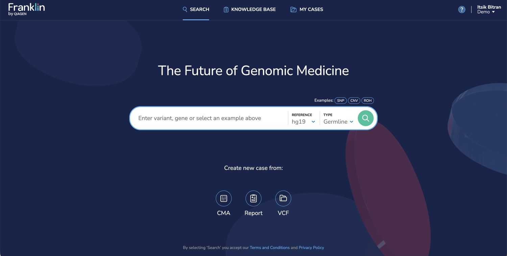
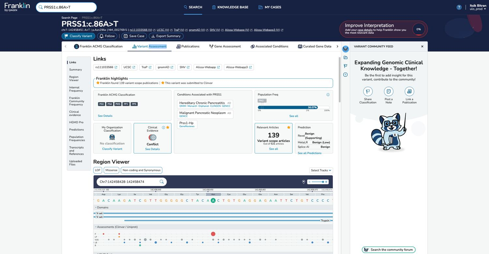
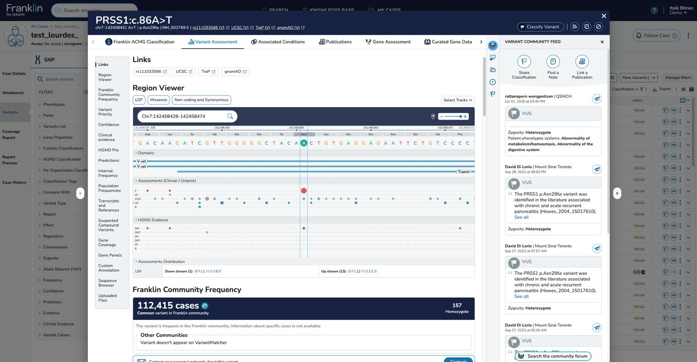
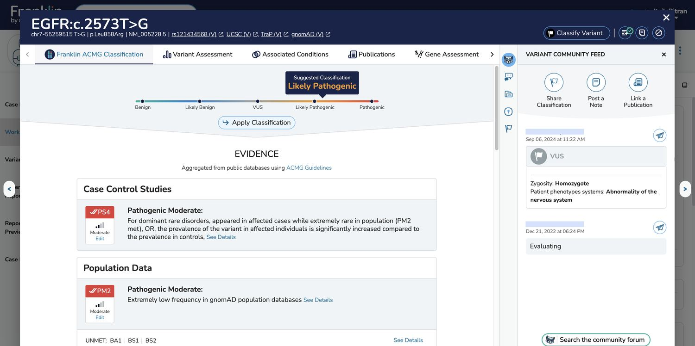
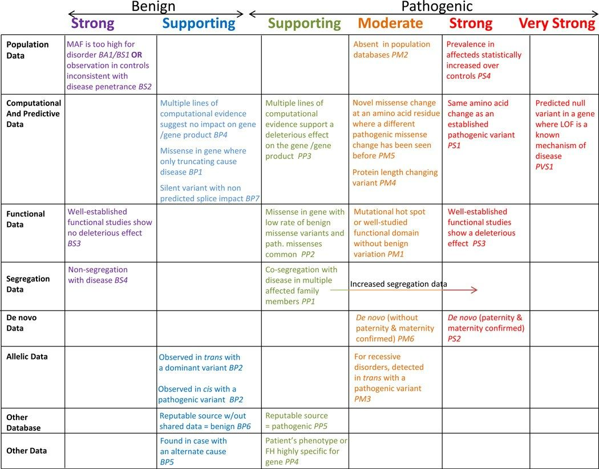
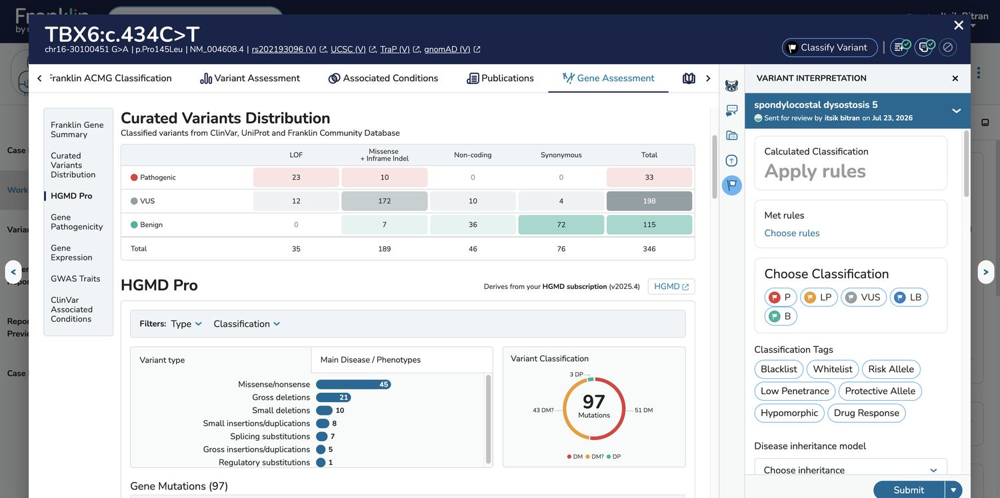
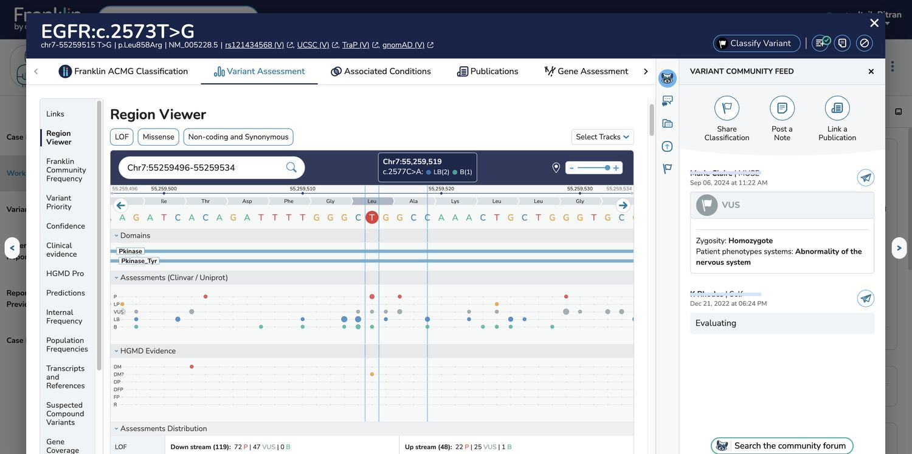
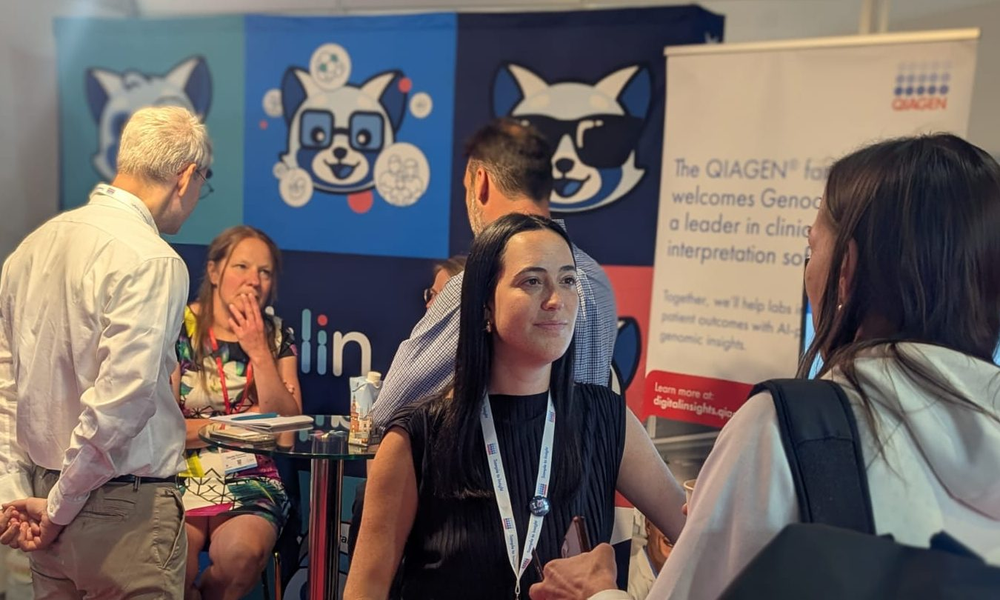
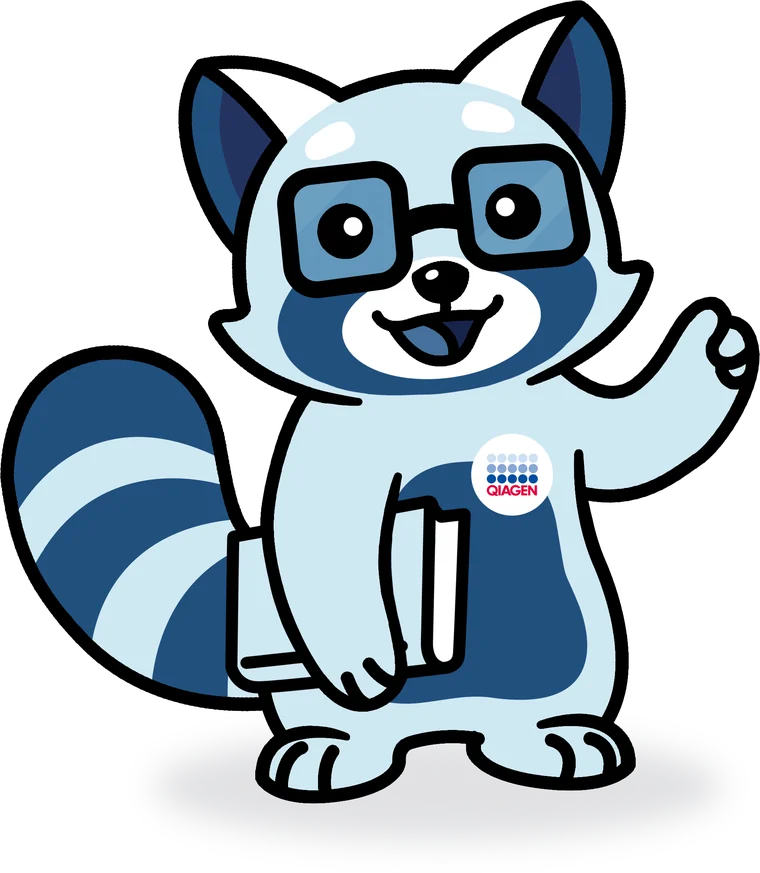
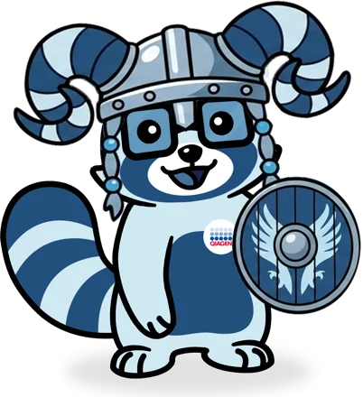

Franklin by QIAGEN helps geneticists, clinicians and labs classify genetic variants. I joined before launch as the only designer and built the product and the brand from a blank page. It is now used by 4,000+ organizations in 95 countries, and the company was acquired by QIAGEN.
Before Franklin, classifying one genetic variant meant fitting it, rule by rule, to a table of 28 criteria. My job was to make an algorithm do that work, and make people trust it.
Anyone can search a variant for free, with no account. The result is complete on its own, and a quiet prompt invites case details. Open the same variant inside a case and the screen fills with context.



The Benign-to-Pathogenic bar became Franklin's signature, distinctive enough that competitors copied it. Every met criterion opens into its evidence, down to the raw data.

Reviewers worked through the ACMG/AMP criteria one rule at a time. Franklin applies the rules and suggests a classification, so the reviewer starts from an answer.

A reviewer can change any rule, add evidence only they know, or pick the classification by hand. Conflicts with their own organization or the community are flagged, never hidden.


Lab directors want speed, geneticists want evidence and control, physicians want a clear answer, and patients want plain language. Every user I talked to worked differently, so the structure had to hold all of them.
Franklin's mascot is a red panda painted blue, named after Rosalind Franklin, whose X-ray images helped reveal the structure of DNA. A professional illustrator drew the original character; I art-directed it and designed the versions Franklin uses today. At conferences, people walk up to the booth because they recognize it.



People who used the free tool asked their own labs to buy the full platform. The company grew and was acquired by QIAGEN, and I still lead design there.
Trust comes from showing your reasoning and letting people disagree with it.
Let's talk about what you're building.